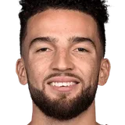

Played 1 season for 1 team; his teams went 8–6 in his games.
Jump to: Record by opponent · Season by season · Teammate help
Compare London Perrantes with…
Final NBA finish, season by season
Title Finals Other playoffs Missed playoffs. #1 = champion; the dashed line is last place that season. Each point opens that season's final standings.
All 30 teams ranked in 2017-18, his best finish (#2)Teammate help
 LeBron James5.51 season
LeBron James5.51 season Kevin Love1.01 season
Kevin Love1.01 season
Career
Career records (W–L, W − L, with and without) include 2026-27 games through Nov. 25, 2026; season counts and finishes are through 2025-26. Each card opens its board in the same scope. How we count.

Latest completed seasons
- 2017-18·
 Cleveland·#2 of 3050–32 · Lost in the NBA Finals 0–4 to
Cleveland·#2 of 3050–32 · Lost in the NBA Finals 0–4 to  Golden State
Golden State
Season by season
Newest first; every header sorts. Final NBA finish is the team's rank among all teams that season (#1 = champion) and opens that season's standings. "Without him" uses the team-season window; the span line counts only the games between his first and last game for the team.
On/off, starts and close games
From the lineup data, 1996-97 on. On/off is net points per 100 possessions with him on the floor minus off, a different unit from the win-rate gaps. Started and off the bench are team records in those games; close games are those within 5 points in the last 5 minutes with him on the floor.
| 2017-18 | −20.8 | 8–6 57.1% |
Teammate help by season
Help this season = Teammates Score points for honors won that season by teammates who shared a game with him, with every teammate that adds to it. Only honors won in that same season count. How help works.
- 2017-18Cleveland
LeBron James All-NBA 1stAll-StarAll-Star MVP5.514 gKevin Love All-Star14 g
Help this season: 6.5 = 5.5 LeBron James + 1 Kevin Love
Other teammates (no honors that season): JR Smith 13 g, Jordan Clarkson 12 g, Jeff Green 12 g, Ante Zizic 12 g, Jose Calderon 12 g, John Holland 11 g, George Hill 11 g, Larry Nance Jr 11 g, Tristan Thompson 9 g, Cedi Osman 9 g, Kyle Korver 8 g, Rodney Hood 8 g, Kendrick Perkins 1 g, Jae Crowder 1 g and 1 more
Record against each opponent
Regular season, through 2025-26 (2026-27 games not included): 14 games, 8–6, against 12 franchises.
Grouped by franchise (named as today); game lists keep each team's name that season. Filters and the tab are kept in the URL, so a filtered view can be shared.
| Games list | |||||||
|---|---|---|---|---|---|---|---|
| 2 | 2–0 | 100.0% | +2 | N/A | 2017-18 | ||
| 2 | 2–0 | 100.0% | +2 | N/A | 2017-18 | ||
| 1 | 1–0 | 100.0% | +1 | N/A | 2017-18 | ||
| 1 | 1–0 | 100.0% | +1 | N/A | 2017-18 | ||
| 1 | 1–0 | 100.0% | +1 | N/A | 2017-18 | ||
| 1 | 0–1 | 0.0% | −1 | N/A | 2017-18 | ||
| 1 | 1–0 | 100.0% | +1 | N/A | 2017-18 | ||
| 1 | 0–1 | 0.0% | −1 | N/A | 2017-18 | ||
| 1 | 0–1 | 0.0% | −1 | N/A | 2017-18 | ||
| 1 | 0–1 | 0.0% | −1 | N/A | 2017-18 | ||
| 1 | 0–1 | 0.0% | −1 | N/A | 2017-18 | ||
| 1 | 0–1 | 0.0% | −1 | N/A | 2017-18 |
Rows add up to his career record in his games. A playoff series counts when he played in it; early round-robin games show as games only. How we count.
Arrival and departure
Team wins per 82 games the season before he arrived vs his first season there, and his last season vs the season after he left. He leaves a team only when his next season with games is for another team (or he never plays again); whole seasons he missed and came back from are one "Missed" row with the team's record without him. Per 82 so short seasons compare fairly. These are team records, not a measure of what he did.
With and without his teammates
His 12 teammates with the most regular-season games together. "Together" is the team's record in the games both played for it; "Without him" is the team's record in the games London Perrantes played for that team while the teammate was on it (between the teammate's first and last game for the team, the appearance span) and the teammate did not play. Fewer than 20 games without him: no gap. Games through Nov. 25, 2026. How we count.
- LeBron JamesCleveland 2017-18
- Together
- 8–6 57.1%
- Without him
- N/A N/A
- Gap
- Too few games without him

- Together
- 8–5 61.5%
- Without him
- 0–1 0.0%
- Gap
- Too few games without him
 Jose CalderonCleveland 2017-18
Jose CalderonCleveland 2017-18- Together
- 8–4 66.7%
- Without him
- 0–2 0.0%
- Gap
- Too few games without him
- Ante ZizicCleveland 2017-18
- Together
- 8–4 66.7%
- Without him
- 0–2 0.0%
- Gap
- Too few games without him
 Jeff GreenCleveland 2017-18
Jeff GreenCleveland 2017-18- Together
- 7–5 58.3%
- Without him
- 1–1 50.0%
- Gap
- Too few games without him
 Jordan ClarksonCleveland 2017-18
Jordan ClarksonCleveland 2017-18- Together
- 6–6 50.0%
- Without him
- N/A N/A
- Gap
- Too few games without him
- John HollandCleveland 2017-18
- Together
- 6–5 54.5%
- Without him
- 2–1 66.7%
- Gap
- Too few games without him
 Larry Nance JrCleveland 2017-18
Larry Nance JrCleveland 2017-18- Together
- 5–6 45.5%
- Without him
- 1–0 100.0%
- Gap
- Too few games without him
 George HillCleveland 2017-18
George HillCleveland 2017-18- Together
- 5–6 45.5%
- Without him
- 1–0 100.0%
- Gap
- Too few games without him
 Cedi OsmanCleveland 2017-18
Cedi OsmanCleveland 2017-18- Together
- 5–4 55.6%
- Without him
- 3–2 60.0%
- Gap
- Too few games without him
 Tristan ThompsonCleveland 2017-18
Tristan ThompsonCleveland 2017-18- Together
- 5–4 55.6%
- Without him
- 3–2 60.0%
- Gap
- Too few games without him
 Rodney HoodCleveland 2017-18
Rodney HoodCleveland 2017-18- Together
- 4–4 50.0%
- Without him
- 2–1 66.7%
- Gap
- Too few games without him